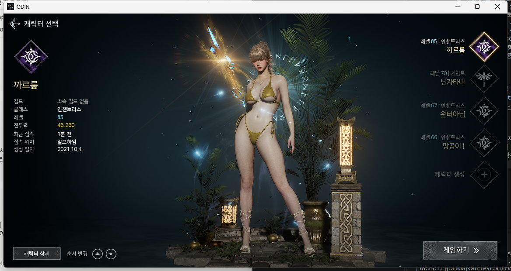
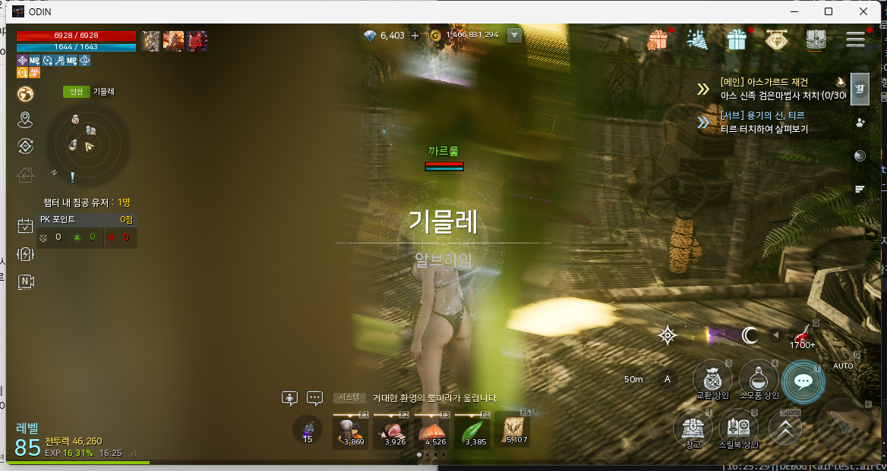

빌드마다 사람이 직접 실행해서 눈으로 확인하던 클라이언트 스모크 테스트를,
화면 인식 기반 자동화로 전환하며 겪은 문제와 해결 과정을 정리했습니다.
대상 게임 오딘: 발할라 라이징 (PC)기간 2026.09역할 설계 · 구현 · 검증 전체GitHub ↗
프로젝트 개요
게임 QA에서는 빌드가 나올 때마다 클라이언트가 정상적으로 실행되는지를 확인하는
스모크 테스트를 반복적으로 수행합니다. 스모크 테스트가 이미 깨진 걸 못 거르고
다음 단계로 넘어가면, 이후 담당자들이 더 깊은 시나리오 테스트에 시간을 쓰다가
뒤늦게 "애초에 실행이 안 됐다"는 걸 발견하는 식으로 QA 인력 전체의 시간이
낭비될 수 있습니다. 그래서 가장 먼저, 가장 빠르게 걸러내는 이 단계를
자동화할 가치가 크다고 판단했습니다.
다만 오딘은 계정마다 보유 캐릭터가 달라 화면 상태가 매번 다르고, 안티치트
때문에 클라이언트가 관리자 권한으로 실행되는 등 튜토리얼 예제가 그대로 통하지
않는 실제 서비스 게임 특유의 문제들이 있었습니다. 혼자 진행한 개인 프로젝트라
문제 진단부터 설계 조정, 구현, 검증까지 전 과정을 직접 했고, 이 페이지는 그
과정의 기록입니다.
Python 3.12Airtest이미지 템플릿 매칭pywin32커스텀 HTML 리포터pytestGoogle Sheets / Apps Script
구현 흐름
1Windows API로 오딘 창을 찾아 연결 (connect_device("Windows:///?title_re=ODIN"))
2스플래시 로고를 인식하고, 화면이 실제로 넘어갈 때까지 반복 클릭
3캐릭터 목록과 무관하게 항상 고정으로 표시되는 화면 제목으로 캐릭터 선택 화면 진입 확인
4"게임하기" 버튼 클릭 (항상 같은 위치라 특정 캐릭터를 고를 필요 없음)
5서로 다른 위치의 두 UI 요소(HP/MP 바 왼쪽 끝 + 상단 메뉴의 BM 상점 아이콘 등)가 모두 인식되어야 인게임 진입으로 판정 — 하나만 보면 다른 화면의 비슷한 아이콘에 오탐할 수 있어서
6성공/실패와 무관하게 단계별 스크린샷이 담긴 HTML 리포트 자동 생성
7실행 결과(시각·시나리오·PASS/FAIL·소요시간·실패 단계·실패 사유)를 Google Sheets에 한 줄씩 기록 — 리포트를 하나씩 열지 않아도 실행 히스토리를 한눈에 확인
8두 번째 시나리오: 상단 메뉴 5개(이벤트·선물·BM 상점·가방·메뉴)를 하나씩 열고 ESC로 닫아, 각 메뉴 화면이 뜨고 HUD로 돌아오는지 확인. 인게임이 아니면 스모크 플로우를 재사용해 자동 진입
wait(SPLASH_LOGO, timeout=15)
for attempt in range(15):
if not exists(SPLASH_LOGO):
break
touch(SPLASH_LOGO)
sleep(1)
else:
raise Exception("스플래시 화면을 15번 클릭했지만 다음 화면으로 넘어가지 않았습니다.")

캐릭터 선택 화면 — 고정 타이틀만 판단 기준으로 사용

인게임 화면 — HP/MP 바 + 상단 메뉴로 이중 확인
트러블슈팅
01 Python 3.13에서 Airtest 설치 실패
증상
pip install airtest 중 numpy 빌드 단계에서 컴파일 에러 발생
원인
Airtest가 요구하는 numpy<2.0이 Python 3.13용 사전빌드 wheel을 제공하지 않아, 소스 빌드에 필요한 C++ 컴파일러가 없어 실패
해결
Python 3.12를 추가 설치하고 해당 버전으로 가상환경을 다시 생성
02 관리자 권한 게임에서 클릭이 먹지 않음
증상
touch() 호출 시 pywintypes.error: SetCursorPos 에러, 이후엔 에러 없이 클릭만 무시됨
원인
오딘이 안티치트 때문에 관리자 권한으로 실행되어, 일반 권한 프로세스의 입력을 Windows UIPI(권한 격리)가 차단
해결
자동화 스크립트를 실행하는 터미널도 관리자 권한으로 실행
03 로딩 화면에서 클릭이 씹힘
증상
스플래시 로고를 인식해 한 번 클릭했는데 다음 화면으로 넘어가지 않음
원인
같은 로고 이미지가 로딩 중에도 잠깐 표시되어, 아직 입력을 받지 않는 시점에 클릭이 발생
해결
화면이 실제로 바뀌는 것(exists()가 False가 될 때까지) 확인하며 반복 클릭하도록 변경
04 계정마다 다른 캐릭터 선택 화면
증상
캐릭터 초상화를 판단 기준으로 쓰면 계정 상태가 바뀔 때마다 템플릿이 깨짐
원인
캐릭터 목록과 순서가 계정마다 달라, 계정 상태에 따라 바뀌는 요소를 판단 기준으로 삼은 것 자체가 문제
해결
계정 상태와 무관하게 항상 고정으로 표시되는 화면 좌상단 타이틀 텍스트만 템플릿으로 사용하도록 변경
05 위치에 따라 바뀌는 인게임 HUD
증상
인게임 판정용으로 캡처한 하단 상점 아이콘이 사냥터에서는 다른 아이콘으로 바뀌어 있음
원인
하단 액션 슬롯은 마을/사냥터 등 위치에 따라 표시되는 아이콘이 달라짐
해결
위치와 무관하게 항상 고정인 요소만 쓰기로 하고, 상단 메뉴 아이콘 + 다른 위치의 요소 하나를 동시에 확인하도록 변경
07 반투명 글자는 뒤 배경이 바뀌면 못 알아본다
증상
인게임 판정에 쓰던 화면 왼쪽 아래 "레벨" 글자가, 스모크 테스트에서는 잘 잡히다가 메뉴 테스트에서는 분명 인게임인데도 인식 실패
원인
이 글자는 반투명이라 뒤에 있는 땅이 비쳐 보임. 나무 바닥에 서 있을 때 캡처한 이미지를 모래 바닥에서 찾으니, 글자는 같아도 뒷배경이 달라서 다른 그림으로 판단됨. 글자가 가늘어서 글자보다 배경이 비교 결과를 좌우했고, 글자만 남게 잘라내도 마찬가지
해결
뒤가 비치지 않는 요소를 찾기 위해 HUD 후보 8곳을 다른 장소에서 찍은 화면과 캐릭터 선택 화면에 각각 대조해, 빨강·파랑 단색인 HP/MP 바 왼쪽 끝을 선택 (다른 장소에서도 잡히고, 캐릭터 선택 화면에서는 잡히지 않음). 앵커 기준을 "위치가 고정"에서 "위치가 고정이고 뒤가 비치지 않음"으로 바로잡음
06 시트 전송이 실패해도 "성공"으로 찍힘
증상
Apps Script 배포 권한을 잘못 잡았는데도 스크립트는 "Google Sheets에 전송 완료"를 출력하고, 시트에는 아무것도 기록되지 않음
원인
권한이 없으면 구글 로그인 페이지(HTML)가 HTTP 200으로 돌아오는데, 네트워크 에러만 없으면 성공으로 간주하고 있었음
해결
HTTP 상태 대신 Apps Script가 돌려주는 JSON의 status: ok를 확인하도록 변경. 테스트 도구 자체가 거짓 성공을 내면 안 되므로, 전송 판정도 테스트 판정과 같은 기준으로 다룸
결과
로딩·화면 전환 자체는 사람이 지켜봐도 비슷한 시간이 걸리기 때문에, 이 프로젝트의
가치는 "속도"보다 "사람이 화면 앞에 붙어있지 않아도 된다"는 데
있습니다. 스크립트를 실행만 시켜두면 그 사이 다른 작업을 할 수 있고, 몇 번을
반복 실행해도 사람마다 판단이 갈리지 않고 항상 같은 기준으로 결과가 나옵니다.
실행 중 사람이 화면을 지켜볼 필요 없이, 종료 후 리포트만 확인하면 됨 (무인 실행)
계정 상태(보유 캐릭터, 위치)에 의존하지 않아 누가·언제 실행해도 동일한 기준으로 재현 가능
"눈으로 보기엔 정상 같았다"는 주관적 판단 대신, 스크린샷 포함 리포트라는 객관적 증거가 매번 남음
실행 이력이 Google Sheets에 누적되어, 팀원 누구나 "최근 몇 번 돌렸고 몇 번 통과했는지"를 시트만 보고 파악 가능
연결·플로우·리포트를 공통 모듈로 빼고 시나리오는 "무엇을 검증하는가"만 남겨, 메뉴 항목 추가가 표 한 줄 + 템플릿 두 장으로 끝남
실패를 실행 준비 / 사전 조건 / 조작 / 화면 확인 네 단계로 구분해 기록하고, 항목이 여럿인 테스트는 한 항목이 실패해도 나머지를 계속 확인
자동화 코드 자체도 게임 없이 도는 단위 테스트 40여 개로 검증 — 오류 분류, 항목별 집계, 시트 전송 판정, 진입/메뉴 플로우 분기
한계 및 향후 과제
아직 개인 학습 프로젝트 단계라 실무 투입까지는 다음 과제들이 남아 있습니다.
지정된 UI 요소의 "존재 여부"만 확인하는 방식이라, 텍스처 미로딩·렌더링 깨짐 등 그 외 영역의 그래픽 결함은 감지하지 못함 — 이 부분은 이미지 비교 기반 UI 회귀 테스트로 보완이 필요
CI 파이프라인 미연동 — 지금은 사람이 직접 실행해야 하고, 오딘이 관리자 권한을 요구해 일반적인 CI 러너에 그대로 얹기도 어려움. 실행 이력은 시트에 남지만 실패 시 Slack 등 즉시 알림은 없음
단일 해상도·그래픽 설정에서만 검증 — 다른 해상도에서도 템플릿 매칭이 안정적인지는 미확인
상단 메뉴 5개까지만 구현 — 햄버거 메뉴 안의 약 20개 항목은 같은 표에 항목과 템플릿을 추가하는 방식으로 확장 예정